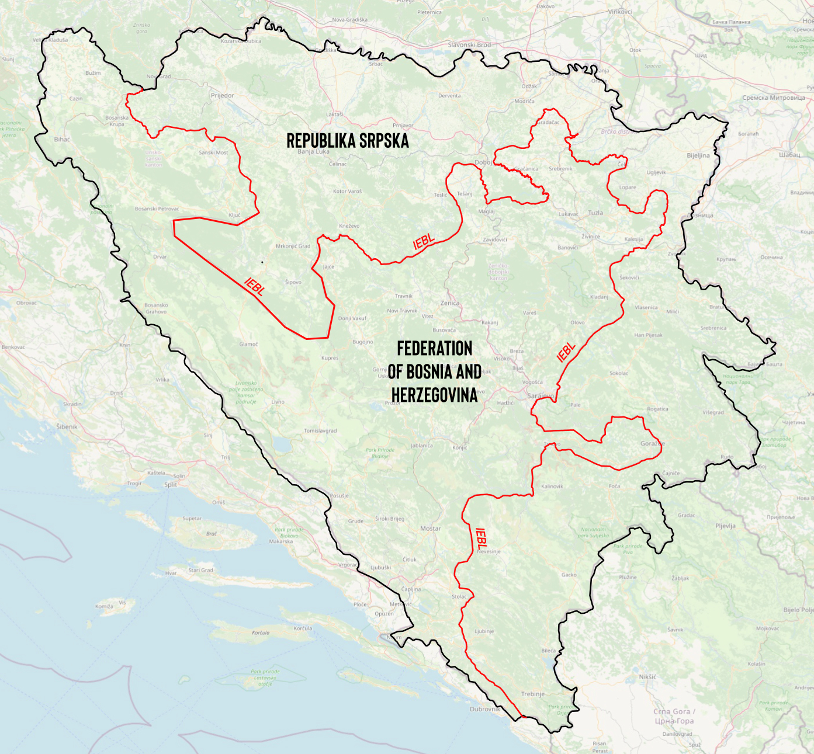

The war in BiH started in 1992 after this country proclaimed independence from Yugoslavia and the ensuing aggression by the Yugoslav National Army under the control of Serbian ethno-nationalist elites. This led to a series of violent conflicts and war that was qualified as map-driven. Maps were continuously used by conflict parties and international negotiators, to claim territory, to document military control, or to divide the country on paper. Mapmaking also preceded the conflict as different parties produced competing visions of ethnic distribution in former Yugoslavia to indicate their desired territorial claims.
The multiethnic complexity of the country was somewhat evident in the official 1991 ethnic map, so-called ‘leopard skin’ map, which visualised the demographic composition in a more contextualised, detailed and complex way.
The maps created afterwards, during the war and in the postwar period, increasingly diminished the representation of multiethnicity (e.g. a high percentage of mixed marriages and families in urban areas) by visualising three majority ethnicities as homogenised groups with choropleth method.
During the peace negotiations in Dayton in 1995, the US negotiating team introduced a new software for delineating terrain, called Powerscene. It was supposed to produce a precise three-dimensional terrain simulation which would help draw territorial division lines in high detail. In retrospect, numerous US participants spoke with enthusiasm of this software and its supposedly objective approach to visualising territory. Its 3D simulation was so detailed that the participants could even see the streets and houses in which their families lived. But this visualisation also affected how participants saw land as empty, worthless or valuable, leading to specific decisions on how to divide it (more in Chapter 1).
In the fall of 1995, peace in BiH was finally brokered in the city of Dayton, Ohio with the Dayton Peace Agreement (DPA). The Inter-Entity Boundary Line (IEBL, entitetska linija) was drawn to divide the country by establishing two entities, the “Federation of Bosnia and Herzegovina” (FBiH) and the “Republika Srpska” (RS). The drawing of the IEBL followed ethnic and military criteria. The imposition of this criteria over complex spatial reality of BiH meant the line would need to cut through cities, villages, streets–in some areas, straight through the houses of people. But it also cut through landscapes, forests, mountains, rivers, lakes and other uninhabited land, often described as worthless during the negotiations (more in Chapter 2).
1 The placement of footnotes or other content in this part